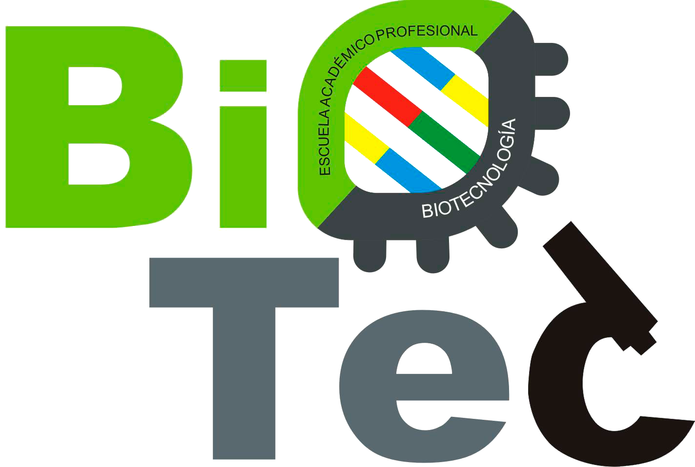

Biotecnología
¿Quiénes Somos?
Somos un grupo de estudiantes, dedicados a la divulgación de la carrera de Biotecnología, de la Universidad Nacional del Santa.
Facebook InstagramSomos un grupo de estudiantes, dedicados a la divulgación de la carrera de Biotecnología, de la Universidad Nacional del Santa.
Facebook InstagramNuestra meta es dar a conocer a la población y la comunidad estudiantil, la biotecnología como ciencia, y dar a ayudar con los temas tratados en la carrera, enfocado de forma virtual.